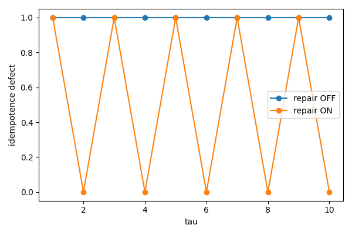
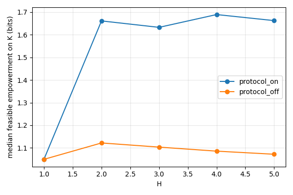
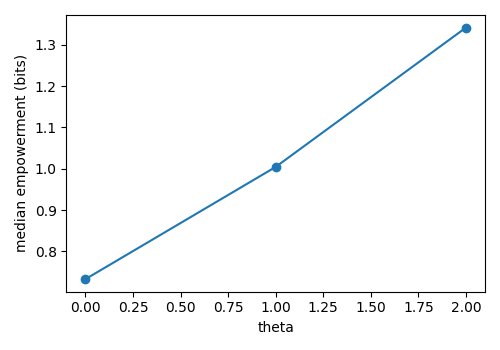

Proves in Lean 4 with mathlib a lemma that iterating a monotone contracting Finset operator reaches the greatest fixed point, anchoring the viability-kernel computation.
Abstract
Six Birds Theory (SBT) treats macroscopic objects as induced closures rather than primitives. Empirical discussions of agency often conflate persistence (being an object) with control (making a counterfactual difference), which makes agency claims difficult to test and easy to spoof. We give a type-correct account of agency within SBT: a theory induces a layer with an explicit interface and ledgered constraints; an agent is a maintained theory object whose feasible interface policies can steer outside futures while remaining viable. We operationalize this contract in finite controlled systems using four checkable components: ledger-gated feasibility, a robust viability kernel computed as a greatest fixed point under successor-support semantics, feasible empowerment (channel capacity) as a proxy for difference-making, and an empirical packaging map whose idempotence defect quantifies objecthood under coarse observation. In a minimal ring-world with toggles for repair, protocol holonomy, identity staging, and operator rewriting, matched-control ablations yield four separations: calibrated null regimes with single actions show zero empowerment and block model-misspecification false positives; enabling repair collapses the idempotence defect; protocols increase empowerment only at horizons of two or more steps; and learning to rewrite operators monotonically increases median empowerment (0.73 to 1.34 bits). These results provide hash-traceable tests that separate agenthood from agency without making claims about goals, consciousness, or biological organisms, and they are accompanied by reproducible, audited artifacts.
Problem
Empirical discussions of agency often conflate persistence (being an object) with control (making a counterfactual difference). This makes agency claims hard to test and easy to spoof. The goal is a type-correct, checkable account of agency within Six Birds Theory.
Approach
An agent is defined as a maintained theory object whose ledger-gated feasible interface policies can steer outside futures while remaining viable. The account is operationalized in finite controlled systems using four components: ledger-gated feasibility; a robust viability kernel computed as a greatest fixed point; feasible empowerment (channel capacity); and a packaging map whose idempotence defect quantifies objecthood. Matched-control ablations are run in a ring-world with toggles for repair, protocol holonomy, identity staging, and operator rewriting. A small Lean 4/mathlib lemma formalizes the finite greatest-fixed-point property underlying the viability iteration.

Figure 1: Packaging stability requires maintenance. Idempotence defect \mathrm{Def}(E) of the empirical endomap E under the macro lens \pi(y,u,\phi,r,\dots)=(y,r,\phi) that hides the damage bit u . Repair disabled (policy cannot reset u ) yields maximal defect at \tau=2 ; repair enabled and used collapses defect to zero at \tau=2 .
Results
Single-action null regimes give zero empowerment, and enabling repair collapses the idempotence defect. Protocol holonomy increases empowerment only at horizons of two or more steps. Learning to rewrite operators raises median empowerment monotonically from 0.73 to 1.34 bits.

Figure 2: Protocol holonomy yields horizon-dependent control. Median feasible empowerment (bits) on the viability kernel \mathcal{K} as a function of horizon H for protocol ON vs OFF, using output lens f(s)=y (outside position). The curves coincide at H=1 but diverge for H\geq 2 , as predicted by P 3 noncommutativity: ordered action composition creates additional reachable outside futures that are

Figure 4: Operator rewriting (P 1 ) increases difference-making. Median feasible empowerment (bits) at horizon H=2 using output lens f(s)=y (outside position), grouped by discrete skill \theta that reduces effective slip/noise in the ring-world kernel. Empowerment increases monotonically with \theta , consistent with P 1 as an induced law change rather than merely an internal record.
config
kernel size
median empowerment
idempotence defect
full
64
1.661
0.333
no protocol
64
1.122
0.333
no repair
0
0.000
0.000
repair imperfect
64
1.557
0.000
learn on
128
1.831
0.333
Primitive ablations (subset): viability kernel size, median feasible empowerment at H=2 (bits), and idempotence defect